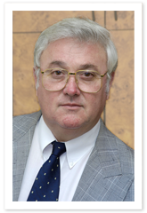
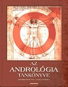

Magamról
 Közel 40 éve foglalkozom andrológiával, melynek alapjait Dr. Molnár Jenőtől, a tudományág magyar megalapozójától tanulhattam. 29 évig a SOTE Urológiai Klinikáján dolgoztam, itt lettem az andrológia első hazai egyetemi tanára 1992-ben. Ezt követően az egykori HIETE / SE Orvostovábbképző Kara Andrológiai és Urológiai Klinikájának voltam tanszékvezetője, majd a jogutód OGYK Andrológiai és Urológiai Osztályának osztályvezető főorvosa. Jelenleg a 2007-ben létrejött Állami Egészségügyi Központ (HM AEK) Urológiai Osztályát vezetem. Az Európai Andrológiai Akadémia az általam vezetett intézményt 2005-től elsőként Közép-Kelet Európában – hivatalos kiképző központtá (Certified Training Center of EAA) nyilvánította.
Operatív andrológiai ismereteim bővítése céljából több alkalommal vettem részt tanulmányutakon a témakör elismert művelőinél (Brüsszel - mikrosebészet, Nyugat Berlin – férfi szexuális zavarok, Salzburg – mikrosebészet, Groningen - nemzőképesség-zavarok, Lipcse - spermium mélyfagyasztás).
1981 óta vagyok a Nemzetközi Andrológiai Társaság (ISA) tagja, 1990-ben a Német Dermatológus Társaság, 1999-ben Európa egyik legrangosabb andrológiai egyesülete, a Német Andrológus Társaság (DGA) tiszteletbeli taggá fogadott. Az Európai Andrológiai Akadémia 1997-ben választott teljes jogú tagjává.
Az elmúlt évtizedekben nagyszámú beteganyag ellátása során szerezhettem klinikai andrológiai tapasztalatot és a hazai legnagyobb operatív anyag (több ezer andrológiai műtét) értékelése során alkothattam véleményt a különféle műtéti beavatkozások gyakorlati hasznosságáról. Több andrológiai diagnosztikus és terápiás eljárást elsőként vezettem be a hazai gyakorlatba, andrológusként részt vettem az asszisztált reprodukció hazai bevezetésében, és a hazai centrumokkal szoros szakmai együttműködést kiépítve elsőként végezetem eredményes sebészi spermiumnyerést műtéti megtermékenyítés céljából.
Urológiából és Andrológiából szakvizsgát tettem, 1982 óta vagyok az orvostudomány kandidátusa.
 1976 óta foglalkozom a hazai andrológia szervezési ügyeivel (2003-2006. Magyar Urológus Társaság elnöke voltam, 2006-tól a Magyar Andrológiai Tudományos Társaság első elnöke vagyok). 2000-ben szerkesztője voltam az első magyar andrológiai egyetemi tankönyvnek. 2004-ben több éves előkészítő munkám eredményeként bevezetésre került Magyarországon az andrológiai szakvizsga, és ez évben vezetésemmel megalakult a Magyar Sexualis Medicina Munkacsoport is.
Szakterületemen tagja ill. tisztségviselője vagyok nemzetközi és hazai tudományos társaságoknak és több szakfolyóirat szerkesztőbizottságának, főszerkesztője a Magyar Andrológiai szaklapnak. Tagja vagyok a Humán Reprodukciós Bizottságnak, 2009-től pedig vezetőségi tagja a Európai Öregedő Férfi Tudományos Társaságnak (ESSAM).
Kezdeményezésemre jött létre a magyar andrológia fejlődését és a fiatal szakember képzést elősegíteni hivatott „Dr. Molnár Jenő Alapítvány”, melynek kuratóriumi elnöke vagyok. Az Alapítvány keretein belül 1992-ben létrehoztam az első magyar andrológiai szakkönyvtárat.
Hobby: irodalom, kézilabda, vadászat